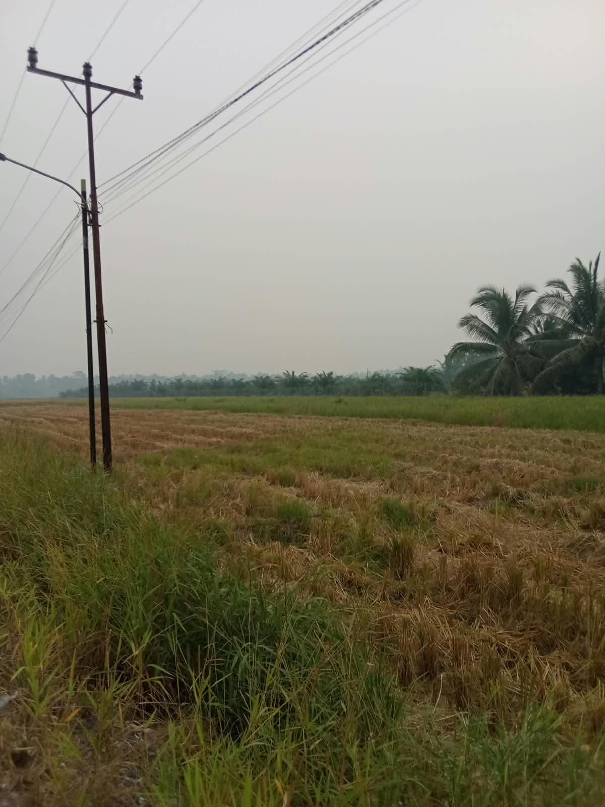

KEINDAHAN DESA
Pesona Alam Pedesaan

Pemandangan Hijau
Lingkungan hijau memberikan suasana sejuk dan nyaman bagi masyarakat.

Suasana Pedesaan
Suasana desa yang tenang menjadi daya tarik tersendiri dari Maktangguk.

Alam yang Asri
Keindahan alam menjadi bagian penting dari kehidupan masyarakat desa.